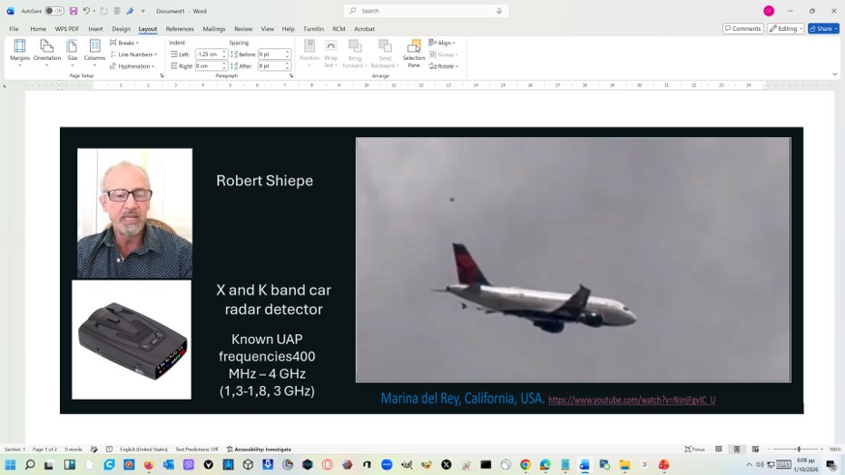

Description
Frequency detection is a complementary method to optical observation. In some reported UAP cases, witnesses have described interference with nearby electronic equipment — car locks, radios, and in one documented case a radar detector responding during a sighting.
Robert Shiepe, a pharmacist and independent researcher, developed and used a modified X and K band car radar detector in this capacity. The device operates in the range of roughly 400 MHz to 4 GHz, with particular sensitivity at 1.3–1.8 GHz and 3 GHz. These are the standard frequency bands used by police radar and traffic control systems, but their sensitivity to microwave-band emissions makes them useful for detecting any source in that range.
Shiepe's documented observation at Marina del Rey, California, showed a radar detector mounted on a tripod responding during a sighting event. The method is described here as a supplementary technique — a way of adding a frequency domain observation to the optical record.
Equipment

Notes
This method is documented by Robert Shiepe and referenced in the UAP Cyprus methodology presentation. Further documentation and the specific equipment used are available on request.
Related observation: Marina del Rey, California, USA — youtube.com/watch?v=NsniFgvIC_U